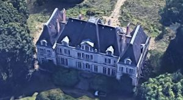
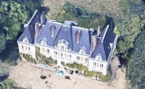

Recensement Jean-Claude Truffet
| Département | 78 — Yvelines |
| Canton | Conflans-Sainte-Honorine |
| Commune | Andresy |
| Type d'édifice | Château |
| Période d'origine | XV-XVII |


FA, la terre et la seigneurie du Fay passe entre diverses mains. En 1670 notamment, Claude de Fusée, seigneur de Voisenon, vend à Jean-Baptiste de Guersans "la terre et seigneurie du Fay consistante en une maison et ferme appliquée à plusieurs bâtiments et édifices, chapelle, jardin clos de murs, et terres étant au pourtour". Plusieurs propriétaires se succèdent et en 1739 Louis Miotte de Ravannes l'achète à Siméon Michel Cavelier qui s'en était porté acquéreur en 1736. Jean Baptiste Miotte de Ravannes en hérite de son père en 1777 et le vend en 1779 à Armand Domilliers de Thésigny qui en est toujours propriétaire en 1821. Monsieur de Sainte Marie l'achète en 1827. C'est lui qui a fait reconstruire le château avant de revendre la propriété en 1855 à Louis Napoléon Lepic. Selon la monographie de l'instituteur il aurait fait réaménager le parc par les frères Bühler. Gustave Roy, riche négociant, l'achète en 1861. Ses mémoires font mention de travaux d'assainissement effectués à cause du sous-sol humide et de la reconstruction des communs par l'architecte Nénot. Le château est resté dans la famille Roy jusqu'au milieu du du XXe siècle. On connaît par une description le château en 1777, le château ou il y a une chapelle attenante, une cour appelée la cour d'honneur au devant du château et fermée d'une grille sur l'avenue.
FA, de l'autre côte de la cour c'est à dire au couchant et en retour vers le midi, les jardins vergers et potagers et un pavillon dans l'angle du mur de clôture destiné pour le logement ordinaire du jardinier. Au midi du château un grand parterre aux cotés duquel sont plusieurs plantations et au bout le parc qui forme un taillis essence de châtaigniers pour la majeure partie, tout cet enclos fermé de murs et contenant ensemble cinquante neuf arpents soixante quatorze perches ou environ. En effet le pv de vente de 1827 décrit un bâtiment de onze croisées avec deux pavillons d'angle, un rez-de-chaussée et un étage mansardé. Il y avait aussi une chapelle aujourd'hui détruite ; le château actuel a gardé la même extension au sol et se compose d'un corps central et de deux corps latéraux saillants. Mais il a un étage carré. Il est précédé d'un bel escalier extérieur en fer à cheval mentionné en 1827. Il est orné de tables saillantes en faux appareillage de briques. Sur le toit en pavillon se trouve un belvédère. Les vestiges du parc présentent un petit lac comportant un rocher artificiel ainsi que quelques essences remarquables : un tulipier, un séquoia, et un araucaria. Dans la cour des communs, le vivier est toujours présent. Le colombier en pierre de taille et à toit en pavillons se trouve à l'extrémité Est du petit parc. Les communs de 1893 ont été reconstruits à l'emplacement de ceux du XVIIIe siècle. Ils sont en brique avec pierre en remplissage.
Famille; Louis Miotte de Ravannes "
Château de Fa à Andresy